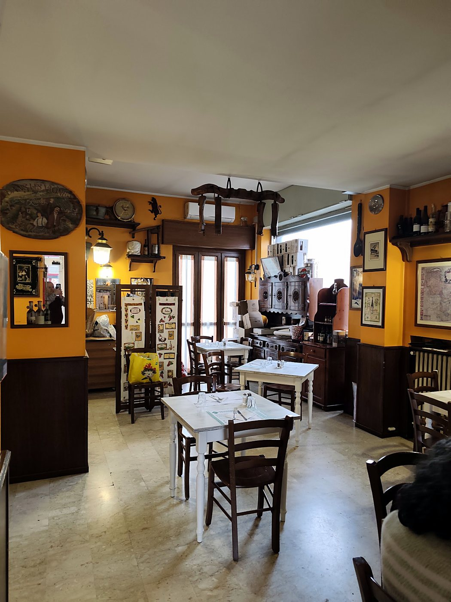
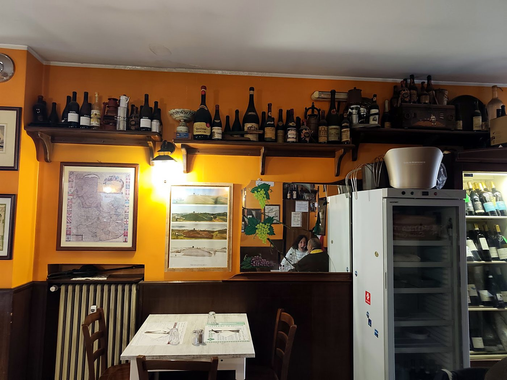
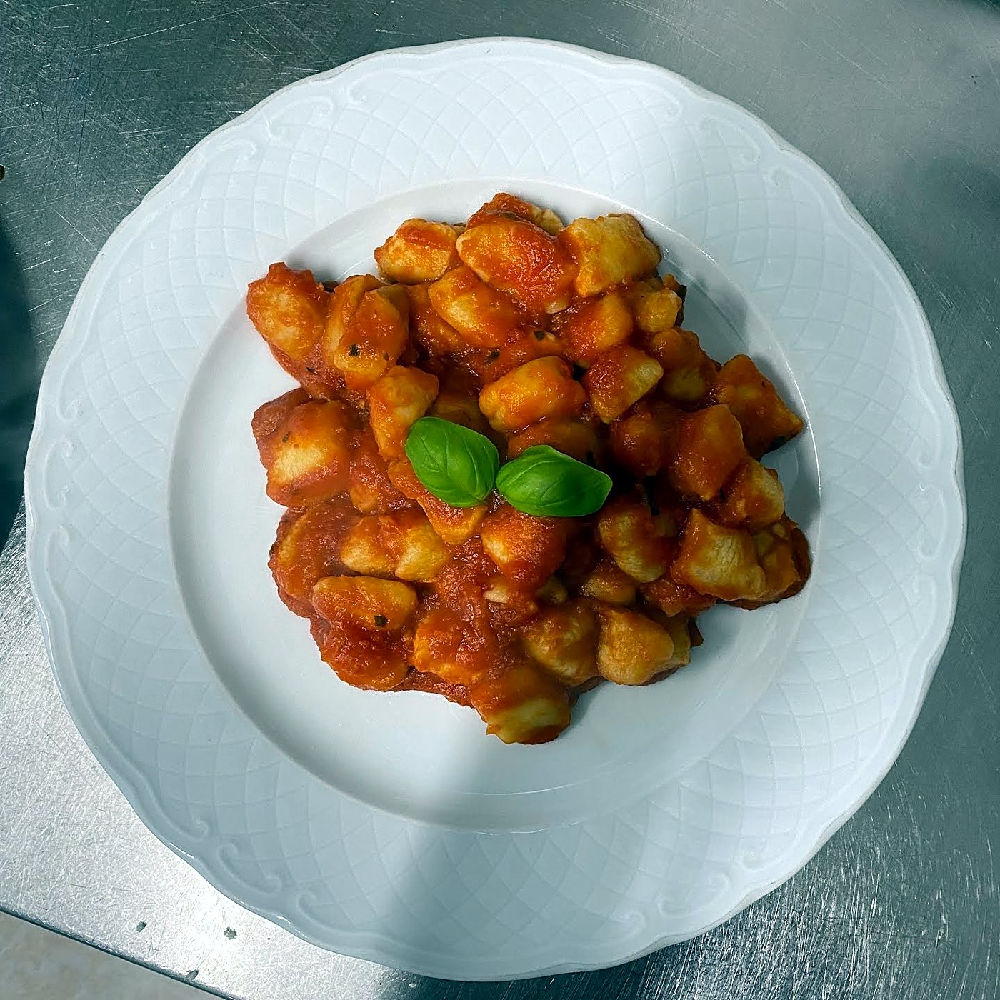
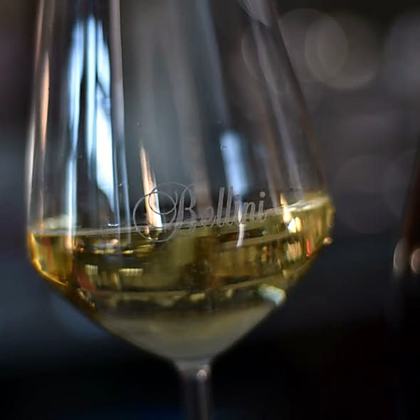
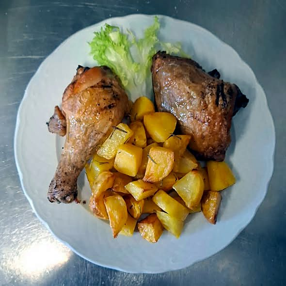
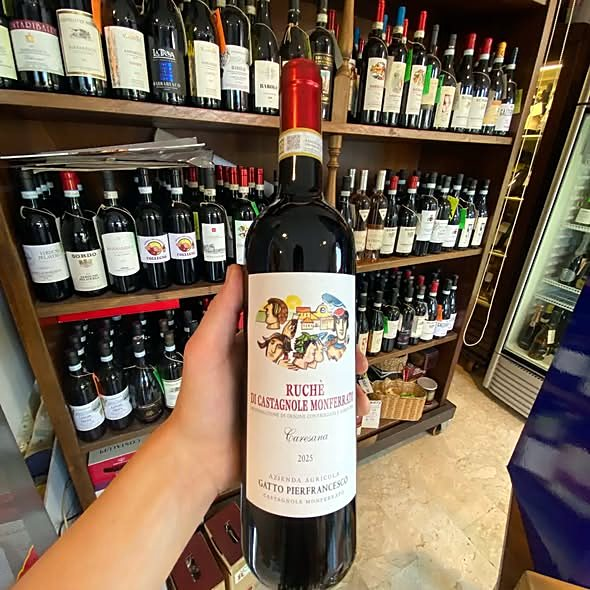
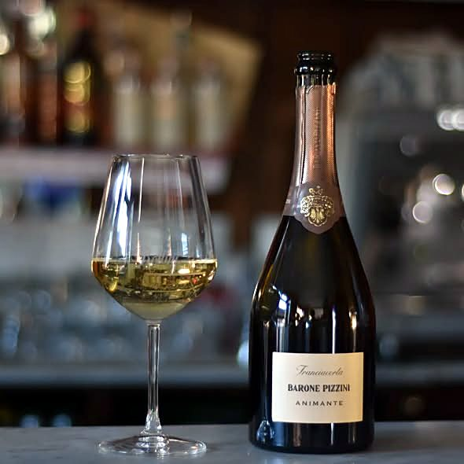
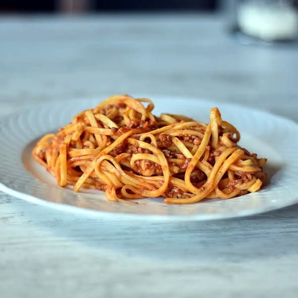

Cucina vera, fatta al momento.
In Corso Togliatti, a Collegno: il caffè la mattina, ogni giorno un menù diverso a pranzo, e un bicchiere scelto bene.
Orari di oggi
Una giornata al Bellini.
Trascinate la lancetta lungo la giornata: siamo aperti dal mattino, e ogni ora ha la sua cosa buona.



Il caffè
Si apre alle sette: caffè al banco, due parole e la giornata può cominciare.

Un cuoco, un cameriere, niente fretta.
Papà e figlio, la cucina e la sala: una trattoria dove ci si sente in famiglia, si mangia casalingo e si può continuare a chiacchierare.
«Ottimo cibo, prezzi giusti, papà e figlio simpaticissimi.»Dalle recensioni su Google
«Cibo casalingo, gentilezza e simpatia la fanno da padrone.»Dalle recensioni su Google
Una cantina sempre in movimento.
Vini italiani e stranieri, etichette scelte e bollicine: al bicchiere con l'aperitivo, con un tagliere di salumi e formaggi, o in bottiglia per il pranzo.
«Una fantastica soppressa e formaggi di qualità. Il prezzo giusto per la degustazione.»



Quando ci trovate.
La cucina è aperta a pranzo, dalle 12 alle 14:15, dal lunedì al sabato.
- Telefono
- 011 405 5335
- Indirizzo
- Corso Palmiro Togliatti 11B · 10093 Collegno (TO)
- Trattoria Enoteca Bellini